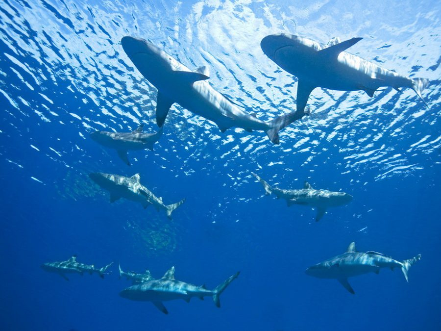
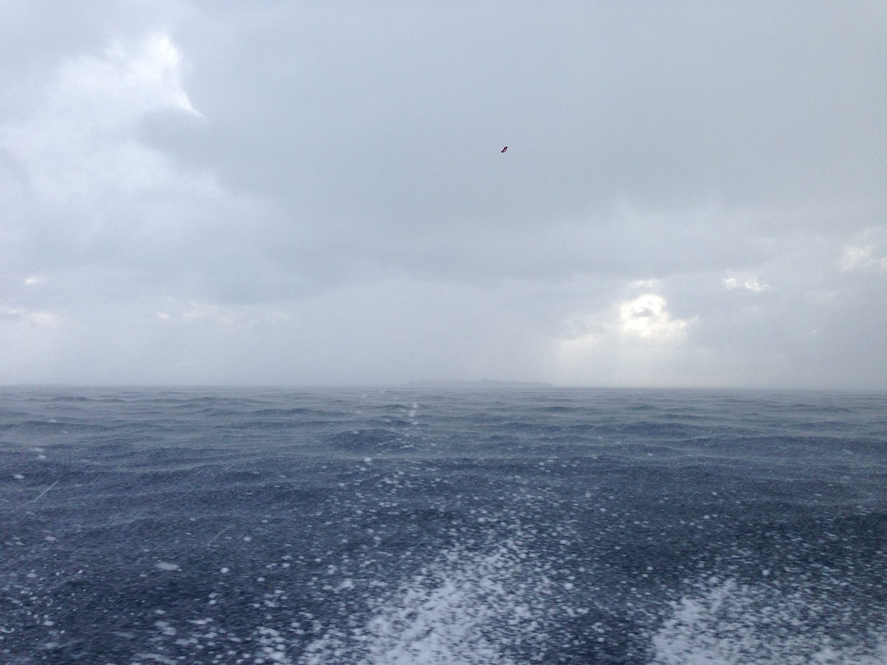

🐬 Reefs, sandbanks & manta trains
Things to Do
Kendhoo sits inside one of the richest stretches of ocean in the Maldives — a short boat ride from the world's largest known manta ray feeding ground.
Kendhoo sits inside one of the richest stretches of ocean in the Maldives — a short boat ride from the world's largest known manta ray feeding ground.

🌊 Protected marine parkOn the far side of Baa Atoll lies Hanifaru Bay — a small, keyhole-shaped bay that, during the southwest monsoon (roughly May to November, peaking July–October), funnels plankton-rich water into a shrinking pocket of sea. The result is one of the most concentrated manta ray feeding events on the planet: on a good day, dozens of reef manta rays gather to feed, sometimes joined by whale sharks, with sightings of over a hundred mantas at once recorded in peak season.
Because it's a protected Marine Protected Area within the wider UNESCO Biosphere Reserve, diving is not permitted — only guided snorkelling, with strict limits on boats and time in the water to protect the animals. Trips are arranged through licensed local guides, typically booked via guesthouses on islands like Kendhoo or Dharavandhoo.

🏖️ Fasdūtherē sandbanksBaa Atoll is officially made up of three separate natural atolls fused under one administrative name — southern and northern Maalhosmadulu, and, wedged between them, the smaller Fasdūtherē Atoll. Its scattering of low sandbanks and uninhabited islets is exactly the kind of scenery postcards are made of: ankle-deep turquoise water, a private strip of sand, and nothing else.
Several Kendhoo excursions head straight for this chain — sunbathing on a private sandbank, a castaway-style picnic, or a sunset dinner served on the sand with no one else around. Close enough for a half-day trip, remote enough to feel like you found it yourself.
Baa Atoll's 75 islands, 105 reefs and extensive seagrass and mangrove habitats were declared a UNESCO World Biosphere Reserve in 2011 — placing it alongside the Galápagos and Komodo as a globally significant natural site.
Excursions on Kendhoo are arranged directly through island guesthouses — no big tour operator required. The list below is run by Dhoani Maldives Guesthouse, a family-run local operator based on the island, and is typical of what's on offer.
All rates in USD, inclusive of 10% service charge and 16% GST. Prices may change slightly; confirm current rates when booking. Most other Kendhoo guesthouses can arrange similar excursions on request.
Book through Dhoani Maldives Guesthouse →Ferries, speedboats, and a flight-plus-boat route all reach Kendhoo — here's how to plan it.
Plan your visit →